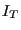
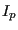

Next: Differential inertia terms in Up: Element Types Previous: User Element (Uxxxx) Contents
An example for a 3D Timoshenko beam element (for static linear elastic
calculations and small deformations) according to [109] is
implemented as element “U1” in CalculiX. It is used in example userbeam.inp
in the test suite. The reader is referred to files resultsmech_u1.f,
e_c3d_u1.f and extrapolate_u1.f for details on how a user elements is coded.
It has to be stated here, that the 2nd order moment  
In addition to [109] the current implementation also contains a mass matrix for dynamic analyses, which has been derived based on the assumptions, that